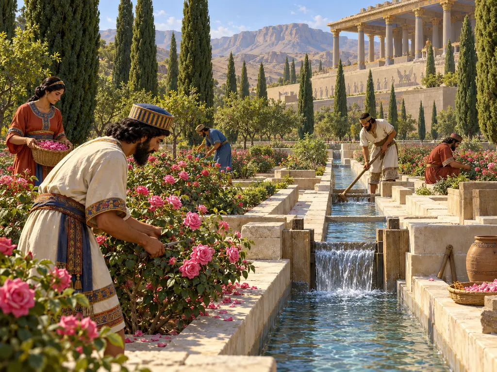
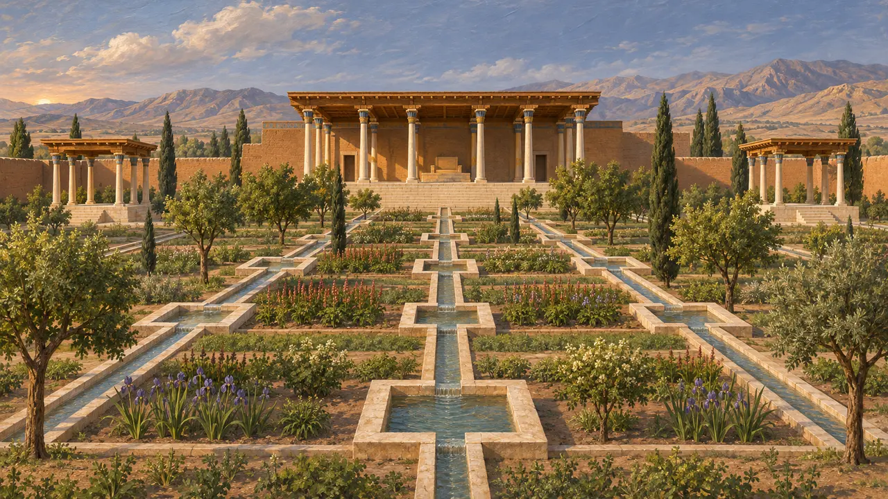
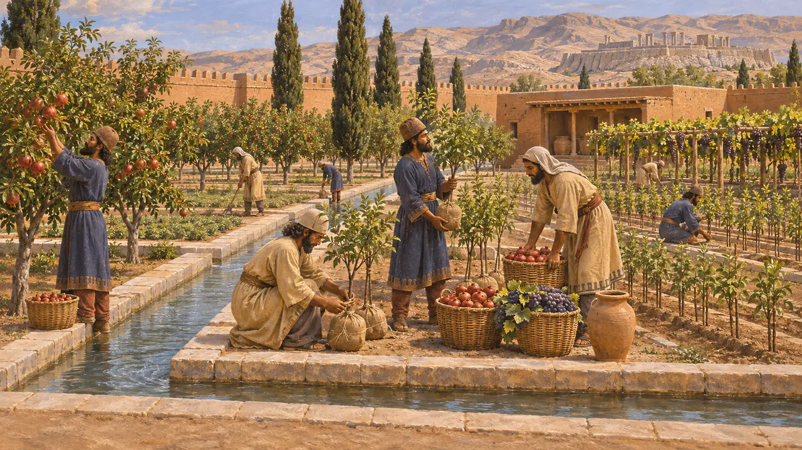
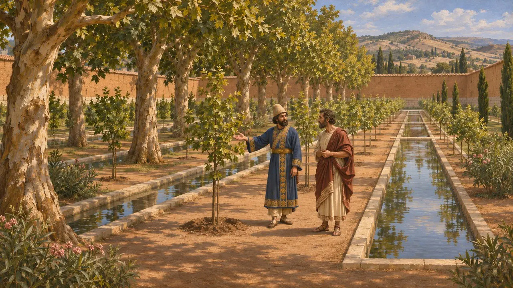
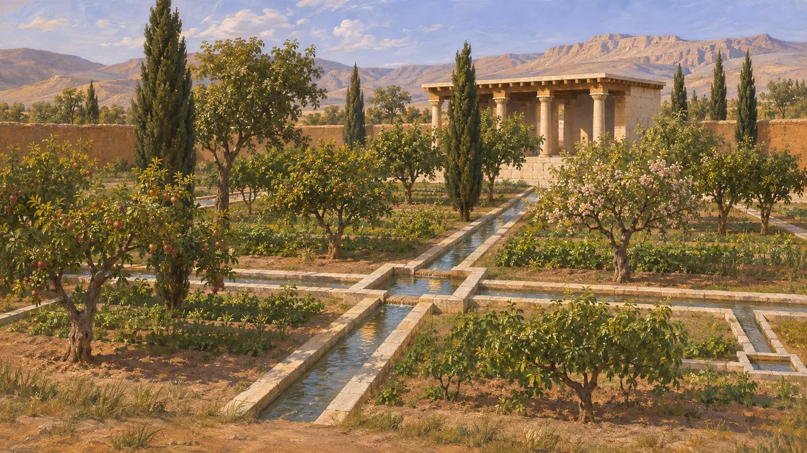
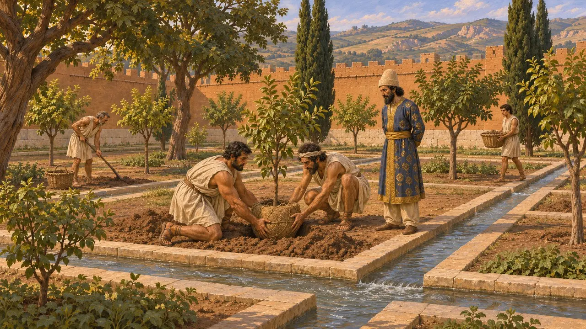

باغ آراسته
باغ دیواردار پارسی با درختان و جویهای آب، از حدود 540 پ.م.
در بازی: مرحلهٔ ۱: آرامگاه بنیانگذار
پارسیان احتمالاً باغ محصور و آبیاریشده را «پَریدَیدا» مینامیدند، واژهای که از صورتهای عیلامی و بابلی آن بازسازی شده است. یونانیان آن را به صورت «پارادئیسوس» وام گرفتند و واژهٔ «پارادایس» (بهشت) در زبانهای اروپایی از همین صورت یونانی برآمده است. شاهان، ساتراپها و بزرگان چنین باغهایی را با ردیفهای درخت و جویهای سنگچین میآراستند، و باغی پرآب نشان میداد که صاحبش بر زمین و آب و نیروی کار فرمان میراند.
در بازی: در بازی، باغ آراسته بنایی خدماتی با درختان سایهگستر و جویهای سنگی است که سراهای بزرگان در شعاع ده واحد به آن نیاز دارند. باغهای واقعی پارسی املاکی دیواردار از آنِ شاه یا بزرگان بودند، پس این قاعده سادهسازی است.

جویهای پاسارگاد
در اسنادکاوشها در پاسارگاد در دههٔ 1960 جویهای آب سنگ آهکی را در باغ شاهی که در روزگار کوروش طرحریزی شده بود، میان کاخ P و دو کوشک کوچک، از خاک بیرون آورد. این جویها در خطوط راست کشیده میشدند و در فواصل معین به حوضچههایی کوچک و چهارگوش راه مییافتند. کرتهای کاشت در میان آنها قرار داشت و ایوان تخت کاخ P بر سراسر این طرح مشرف بود.
D. Stronach, Pasargadae, 1978

باغها در گلنوشتههای باروی تخت جمشید
در اسنادگلنبشتههای اداری عیلامی تخت جمشید، نوشتهشده در حدود 509 تا 493 پ.م.، واژهٔ partetaš را به کار میبرند که از اصطلاح پارسی وام گرفته شده است. آنها چنین املاکی را در چند جای پارس ثبت میکنند که کارگرانی به آنها گمارده شده بودند و فراوردهها و نهالها از آنها گذر میکرد. این اسناد باغها را بخشهایی کارا از اقتصاد شاهی نشان میدهند، نه تنها جایگاه خوشی و آسایش.
Persepolis Fortification tablets; C. Tuplin, Achaemenid Studies, 1996

دیدارکنندگان یونانی در باغهای پارسی
روایت باستانیگزنفون روایت میکند که کوروش کوچک، شاهزادهٔ پارسی، در اواخر سدهٔ پنجم پ.م. پردیس خود را در سارد، با درختانی در ردیفهای راست، به لیساندر اسپارتی نشان داد و گفت برخی از آنها را خود کاشته است. هرودوت میگوید خشایارشا در سال 481 پ.م. که به سوی سارد پیش میرفت، در لیدیه چناری زیبا یافت، آن را با زر آراست و نگهبانی بر آن گماشت. هر دو نویسنده رسیدگی به درختان را کاری مینمایانند که فرمانروایان پارسی ارج مینهادند.
Xenophon, Oeconomicus 4.20-25; Herodotus 7.31

نقشهای چهاربخش یا نه
مورد مناقشهاستروناک، کاوشگر محوطه، بعدها استدلال کرد که جویهای پاسارگاد چهار بخش را در میان میگرفتند، و از این رو این باغ کهنترین باغ چهاربخشی شناختهشده و نیای چهارباغ پارسی روزگاران بعد است. دیگران یادآور میشوند که تنها بخشهایی از این آرایش برجای مانده، و بررسیهای ژئوفیزیکی محوطه از حدود سال 2000 به این سو از آرایشی نه چندان منظم حکایت دارند. اینکه نقشهٔ چهارباغ از اینجا آغاز شد یا نه، همچنان مورد بحث است.
D. Stronach, Pasargadae, 1978; P. Briant, From Cyrus to Alexander, 2002

نامهٔ داریوش به گاداتاس
مورد مناقشهسنگنبشتهای یونانی نامهای را ثبت کرده که در آن داریوش کارگزارش گاداتاس را برای کاشتن درختانی از آن سوی فرات در غرب آسیای کهین میستاید. خود سنگ سدهها بعد، در دورهٔ رومی، تراشیده شده است. تاریخنگاران در اینباره همداستان نیستند که آیا رونوشت نامهای راستین از شاه است یا نوشتهای متأخر.
Letter of Darius to Gadatas (Meiggs-Lewis 12); P. Briant, From Cyrus to Alexander, 2002
منابع
- D. Stronach, Pasargadae, 1978
- P. Briant, From Cyrus to Alexander, 2002
- C. Tuplin, Achaemenid Studies, 1996
- Xenophon, Oeconomicus 4.20-25
- Herodotus 7.31
- Letter of Darius to Gadatas (Meiggs-Lewis 12)